EL PROYECTO
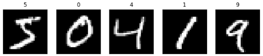En la figura se pueden observar una serie de números escritos a mano. Para una persona, identificar qué número representa cada figura es una tarea trivial, pero para una computadora es una tarea de gran complejidad.
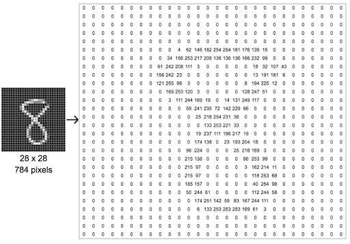En la computación se representa a las imágenes como matrices de m x n píxeles. Cada píxel puede tener un canal en las imágenes en escala de grises, o 3 a 4 canales en las imágenes a color. Para una computadora una imagen no es más que una serie de números ordenados. Debido a las grandes variaciones que pueden existir entre un número escrito a mano y otro, es de gran complejidad crear un solo algoritmo clásico que pueda identificar qué número representa cada imagen debido a que significaría analizar millones de posibles casos.
Gracias a los avances computacionales que se han desarrollado en los últimos años, han aparecido algoritmos o modelos que pueden “aprender” de los datos. Está área de la computación es lo que se conoce como la inteligencia artificial. Las redes neuronales en particular son capaces de realizar tareas que eran previamente inviables de realizar.
Una red neuronal es un modelo computacional que puede “aprender” a base de ejemplos. A grandes rasgos no es más que una función matemática, y el proceso de “aprendizaje” un descenso de la función de error para alcanzar un mínimo local.
Las redes neuronales están constituidas por varias capas de nodos o neuronas conectadas por weights. Por lo general una red neuronal tiene una capa de entrada, una o varias capas ocultas y una capa de salida.
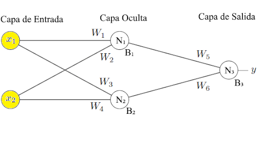En la figura se puede observar una red neuronal simple que consiste de una capa de entrada con dos neuronas, una capa oculta con dos neuronas y una capa de salida con una sola neurona. Las neuronas de cada capa están conectadas con las neuronas de la capa siguiente a través de weights, un weight no es nada más que una variable. A su vez, cada neurona de la capa oculta y de la capa de salida tiene un bias, que también no es más que una variable.
El valor de una neurona se calcula como la suma de los productos entre los valores de las neuronas de la capa anterior por su respectivo weight, más el bias de esa neurona. Luego se aplica una función de activación que normaliza el valor de esa neurona.
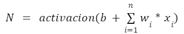Teniendo en cuenta esto, el valor de cada neurona de la figura 3 se puede calcular de la siguiente manera:
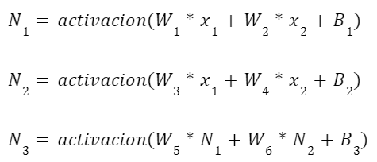Existen muchas funciones de activación que se pueden usar para normalizar los valores. Es necesario normalizar los valores porque, de lo contrario, los valores de la red pueden aumentar muy rápidamente. La función de activación más común y la que se utilizara para poder clasificar los números escritos a mano será la función sigmoidal:
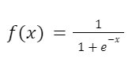La cual produce la siguiente curva:
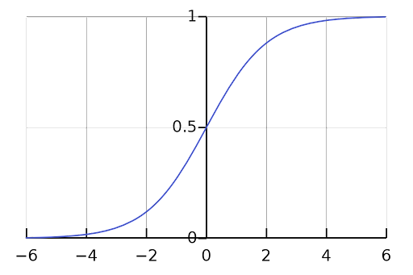Como se muestra en las ecuaciones, una red neuronal no es más que una función con muchas variables (weights y bias) que dada una entrada da una salida.
Para obtener el comportamiento esperado de una red neuronal es necesario minimizar el error, es decir minimizar la diferencia entre los valores que queremos obtener y los valores de salida que se obtienen de la red. Algunas de las funciones de error más utilizadas para las redes neuronales son:
La función mean squared error.
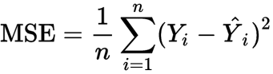- n = la cantidad de neuronas en la capa de salida.
- Y = el valor que se quiere obtener en la neurona i de la capa de salida.
- Ŷ = la predicción que obtenemos en la neurona i de la capa de salida.
La función cross-entropy.
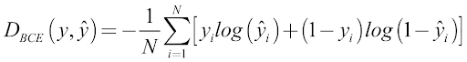- N = la cantidad de neuronas en la capa de salida.
- y = el valor que se quiere obtener en la neurona i de la capa de salida.
- ŷ = la predicción que obtenemos en la neurona i de la capa de salida.
Se usará la función cross-entropy para entrenar una red que pueda predecir los números escritos a mano debido a que proporciona buenos resultados al momento de tener que descender la gradiente.
También se le agregara el siguiente término a la función de error para reducir el tamaño de los weights, debido a que se obtienen mejores resultado fomentando weights de menor tamaño.
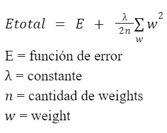Para que la red neuronal “aprenda” o se “entrene” es necesario utilizar una gran cantidad de ejemplos con sus respectivas salidas esperadas. Hay que ir por cada ejemplo y ajustar cada variable (weights y bias) considerando que el resto de las variables son constantes. Para ajustar cada variable se calcula la derivada de la función de error con respecto a esa variable y se la multiplica por una constante para regular el tamaño de ajuste que se le realizará a la variable, la constante es negativa porque queremos bajar por la gradiente para alcanzar un mínimo local (realizar un descenso de gradiente de la función de error).
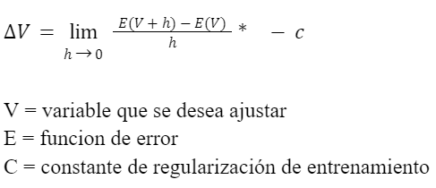Una vez calculado el delta V se lo sumamos a V para realizar el ajuste. Cuantos más ejemplos se utilicen al momento de entrenar la red, mejor será la capacidad predictiva de la misma.
Para crear una librería de red neuronal capaz de crear redes neuronales de tamaño y forma variable se utilizó el lenguaje de programación C++, debido a que una vez compilado demuestra velocidades de computación muy veloces.
Con esta librería se creó una red neuronal capaz de determinar qué número es cada imagen de un número escrito a mano.
Como material de entrenamiento se utilizó el set MNIST que contiene 70.000 imágenes (60.000 de entrenamiento y 10.000 de validación) con sus respectivas categorizaciones de números escritos a mano por alumnos de secundaria de diferentes escuelas de los Estados Unidos. Cada imagen es una matriz de 28 x 28, es decir que presenta 784 valores y cada imagen viene con su respectiva categoría, es decir, qué número representa esa imagen.
La librería de redes neuronales creada tiene funcionalidad para guardar y abrir redes neuronales. Permitiendo entrenar redes y guardarlas para poder usarlas luego. Esto es una funcionalidad necesaria porque entrenar una red neuronal es una tarea que requiere de muchos recursos computacionales. Se debe ajustar cada variable (puede haber millones en algunas redes) por cada ejemplo (para obtener una red con buenos resultados es necesario miles de ejemplos) y esto se puede repetir un par de veces (por lo general entre 5 y 100) para obtener mejores resultados.
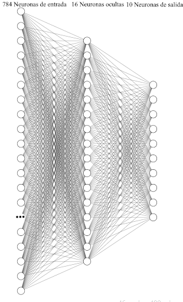Se creó una red con forma {784, 16, 10}, es decir, que tiene 784 entradas (una por pixel), 16 neuronas ocultas, y 10 neuronas de salida (una por cada número del 0 al 9). Las entradas están normalizadas entre 0 y 1 porque las redes neuronales se manejan de manera más efectiva con valores pequeños. Cada neurona de salida representa uno de los números posibles que pueden haber, es decir, que si en la entrada introducimos una imagen de un 4 la salida debería ser: {0, 0, 0, 0, 1, 0, 0, 0, 0, 0}.
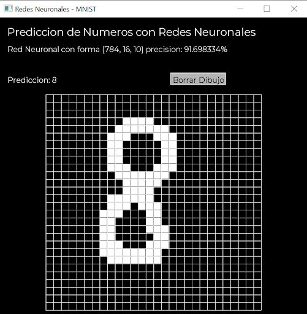También se creó un programa donde una red neuronal ya entrenada puede predecir el número que se dibuje en la cuadrícula. Para crear la ventana y mostrar los gráficos por pantalla se utilizó la librería SFML.
Luego de haber ajustado cada una de las 12.730 variables de la red, por cada uno de los 60.000 ejemplos de entrenamiento del set MNIST, repitiendo el proceso 5 veces, se obtuvo una precisión sobre los 10.000 ejemplos del set de entrenamiento del 91.69%. Este es un resultado muy bueno en comparación con métodos tradicionales de análisis de imágenes que sobre el set MNIST no han logrado una precisión mayor al 75%.
La baja precisión que se obtiene con métodos tradicionales de análisis de imágenes es debida a que existen muchas variaciones entre diferentes representaciones de un mismo número y es casi imposible crear a mano un algoritmo que pueda adaptarse a esta variaciones.
Se podría obtener una precisión mayor al 91.69% obtenido con un proceso de entrenamiento más largo. Pero la red neuronal entrenada presenta muy buen rendimiento al momento de categorizar un número escrito a mano.